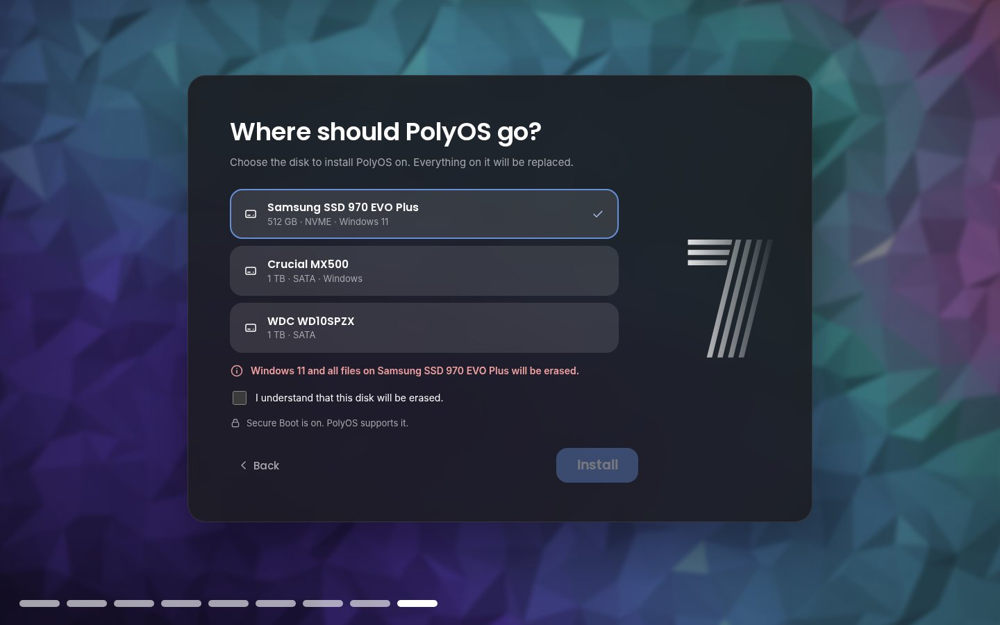

Login and lock screen
The PolyOS 7 design: a big stacked clock, date, Performance: Optimal, news and notifications over the blurred amethyst crystal. Locks instantly with Win+L, and a recovery key resets a forgotten password.
Cryptic Software presents
PolyOS started as an operating system built in Scratch by PIXAPoLY team. This project turns it into a real desktop that boots on your PC: the PolyOS look you know, on top of Debian's drivers, Wi-Fi, apps and security.

What's inside
Every screen follows the Scratch original: its colors, shapes and layout were measured from the PolyOS 7 costumes.
The PolyOS 7 design: a big stacked clock, date, Performance: Optimal, news and notifications over the blurred amethyst crystal. Locks instantly with Win+L, and a recovery key resets a forgotten password.
The capsule dock with pinned and running apps, app shortcuts on the wallpaper, a right-click menu, and a taskbar you can float, stretch edge to edge, align left or hide.
Tap the Windows key for Start: search apps, settings and files, your pinned apps, All apps, and your recent files, with power and Settings at the bottom.
Win+W: weather, calendar, system, news, to-do, notes, photos, world clocks and media controls, in a board you can rearrange.
A file manager for the real disk: places, breadcrumbs, grid and list views, thumbnails, search, copy and paste, and a Trash you can restore from.
Ctrl+Shift+Esc: apps and processes with CPU and memory, End task and Force close, and live performance graphs.
Finds NVIDIA, AMD and Intel graphics, Wi-Fi (Broadcom too), Bluetooth and sound, and installs the right drivers and firmware.
The PolyOS app store: Chrome, Discord, Spotify, Steam, VS Code, LibreOffice, OBS and more, from Debian and Flathub.
Display (resolution, refresh rate, graphics), Sound (every device, with the full mixer a click away), Account (your Poly Account, password and PIN), Privacy, Wi-Fi, Personalization, Taskbar and Desktop, Gaming, Vara, Apps (installed, startup and usage) and Storage.
Photos and videos from your webcam with a self-timer and mirror, saved to Pictures. It only appears on computers with a camera.
Tell it what to build. Vara writes and runs code, makes 3D models, works with ROS 2 robots and Arduino boards, and asks before it changes anything.
"Cryptic Software presents", the falling pinwheel and the 7, then install on a whole disk, next to Windows, or choose every drive yourself.
Gallery
Real screenshots of PolyOS. Click any of them to see it full size.


Editions
Pick an edition while installing. Its apps arrive the first time you sign in, and you can add the others any time in Settings.
Everything most people need: the PolyOS desktop, Google Chrome, Files, Camera, widgets and PolyMarket.
Change PolyOS itself. Any file you put in your interface folder replaces PolyOS's built-in one, on every screen.
user.css restyles everythingpolyos-ctl dev off undoes a broken changeSet up for play: Steam, Windows games with Wine, other launchers, cloud gaming and a Game Mode.
Vara
Vara works like a coding agent that lives in your desktop. Tell it what you want; it plans, looks at your files, uses the right tools, checks the result and tells you what it did.
Works with Ollama Cloud, OpenAI, NVIDIA, Claude or any OpenAI-compatible service.

The installer
The PolyOS 7 setup puts PolyOS on your computer three ways:

Safe and fast
Other computers can't connect in; your apps still reach the internet.
Debian's security fixes install themselves in the background.
After 5 wrong passwords the lock screen makes you wait, longer each time.
Firewall, updates, lock screen, recovery key, AppArmor and Secure Boot at a glance.
Power saver, Balanced, Performance and Maximum, with screen-off and sleep timers.
Compressed RAM swap, SSD trimming, a faster startup, and full-screen games skip the compositor.
Under the hood
Debian provides the kernel, drivers, Wi-Fi, audio and apps. PolyOS provides everything you see. The interface is plain HTML, CSS and JavaScript, running in WebKitGTK windows that a Python shell places on an Openbox desktop.
Only one small, tested helper ever runs as administrator, and it only installs what the PolyMarket catalog allows.
What's new
Everything tidied up to feel like a finished system: a Windows-style Start menu, Google Chrome, easier screens, dual boot that just works, and PIN sign-in.
Search apps, settings and files; pinned apps, All apps A to Z, and your recent files. Only the apps you need, with no technical clutter.
Chrome is the browser, with its updates. Install several PolyMarket apps at once: they queue up and install in turn.
Plug in a monitor and it just works: Duplicate, Extend or one screen with Win+P, remembered for next time, the desktop on every screen.
Setup spots Windows' Fast Startup before it can cause a repair loop. PolyOS starts straight away, with Restart to Windows in Start.
A 4 to 6 digit PIN for the sign-in and lock screens, or your Poly Account password. Installing still asks for the real password.
Storage, app usage, lid and power button, night light, airplane mode, energy saver, and firmware updates from your computer's maker.
Set up once: everything is asked before installing, and PolyOS starts straight to your desktop.
Signed updates on your schedule, an optional Poly Account with sync and device management, and a new website.
Dual boot with your own partition and BitLocker help, touchscreen and camera drivers, a model-aware hardware check, and a themed boot menu.
Try it
Which one? Almost every Windows PC and laptop: PC (Intel/AMD). Apple Silicon Macs (in UTM, Parallels or VMware Fusion), other ARM64 virtual machines and ARM64 computers with UEFI firmware: ARM64.
Always the newest release. Clicking a button starts the download and shows you how to install.
Step by step, with boot menu keys for every brand, BitLocker and fixes for common problems: the install guide.
Just want to look around? Anyone with Python can preview the whole interface in a browser:
python main.py dev
Timeline
The desktop shell: capsule dock, Home Menu, full-screen launcher, Files, Settings, Ask Vara, the login screen, the boot splash and a live USB built on GitHub.
The PolyOS 7 setup with the "Cryptic Software presents" intro, Install and Dual boot. Task Manager, Driver Manager, PolyMarket, dark and light mode.
The Windows key opens and closes the Home Menu; the live USB keeps its install card on the desktop.
An instant lock screen, "Forgot password" with a recovery key, the widgets board, and a faster restart after installing.
Login and lock screens redrawn from the Scratch original, the crystal wallpapers, the Camera app, desktop shortcuts, and new Taskbar, Power and Privacy settings.
Regular, Developer and Gaming editions, choosing drives and partitions while installing, firewall and security updates on by default, and speed tuning.
Download buttons right on this site, with an install guide, and a second ISO for ARM64 computers and Apple Silicon Macs.
Vara now builds things: code, OpenSCAD and Blender models, ROS 2 and Arduino, with skills, memory and your approval for every change. Plus real app icons everywhere, a PolyOS boot menu, and ARM64 USB drives that start on UEFI computers.
Display and Sound controls, the Apps page, true full screen, the first-start hardware check with a light mode, a Windows Setup style drive list, and Claude and NVIDIA for Vara.
Online updates from Settings, BitLocker help and your own partition for dual boot, touchscreen and camera drivers, a model-aware hardware check, and a themed boot menu.
An optional Poly Account with device management, recovery and sync; updates on your schedule, signed by Poly; and a new website.
Everything from 0.9 with a friendlier Poly Account sign-in in Settings, release notes in Settings › Updates, and polish throughout.
Everything is asked before installing, so PolyOS starts straight to your desktop; drivers and apps install by themselves, and restarting after installing no longer freezes.
A Windows-style Start menu, Google Chrome, easy multiple screens, dual boot without repair loops, PIN sign-in, and Storage, Usage and firmware updates in Settings.
PolyOS was created in Scratch by PIXAPoLY Software team (scratch.mit.edu/users/PolyOS). This edition is presented by Cryptic Software, with the team's blessing.
PolyOS for Debian is free software under the GNU GPL v3 or later. The PolyOS logo, colors and PIXAPoLY artwork come from the Scratch project (CC BY-SA 2.0). The Crystal and Amethyst wallpapers in the screenshots are third-party photos used by PolyOS 7. The Poppins font is under the SIL Open Font License. "Scratch" is a trademark of the Scratch Foundation; PolyOS isn't affiliated with or sponsored by the Scratch Foundation or Debian.